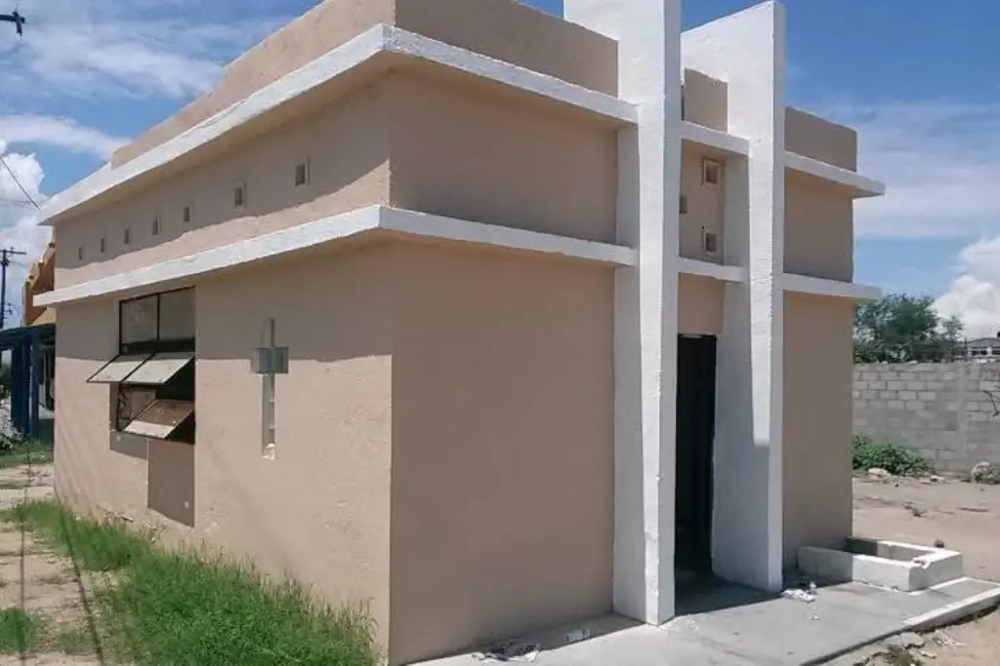
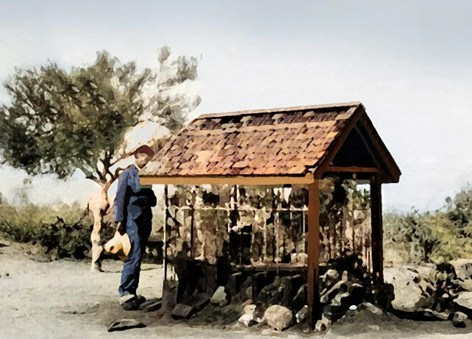

La Animita

LA LEYENDA
(La Paz, Baja California Sur)
La leyenda de “La Animita” cuenta la historia de José Lino de Jesús, un niño de apenas 11 años que decidió sacrificar su vida para salvar a su padre.
El 11 de noviembre de 1866, el cruel cabo Crispín ordenó que el pequeño fuera arrastrado entre choyales y matorrales hasta morir, convirtiendo este hecho en una de las historias más trágicas y recordadas de Baja California Sur.

EL SACRIFICIO
(Símbolo de valentía y amor)
José Lino pidió a los soldados que acabaran con su vida en lugar de la de su padre, demostrando un enorme acto de valentía y amor filial.
Su padre observó impotente la tragedia, mientras el pequeño se convertía en símbolo de sacrificio, respeto y esperanza para muchas personas.

LA ANIMITA HOY
(Lugar histórico y de fe)
Con el paso del tiempo, la historia de José Lino trascendió como una leyenda. Muchas personas visitan “La Animita” para dejar veladoras, flores y pedir milagros.
Actualmente, este sitio es considerado un símbolo cultural e histórico de La Paz, recordando el valor y el sacrificio de un niño que entregó todo por su familia.